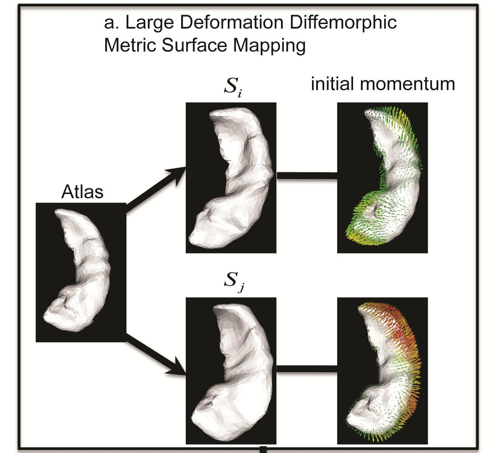
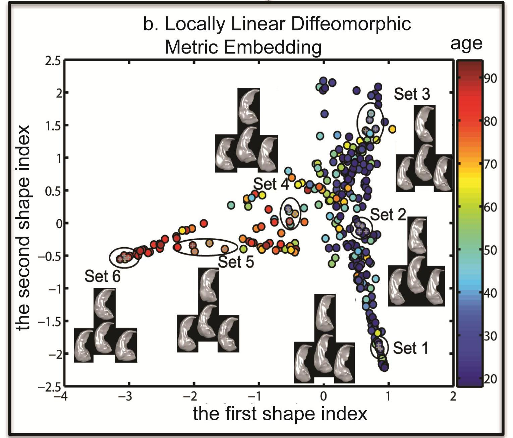
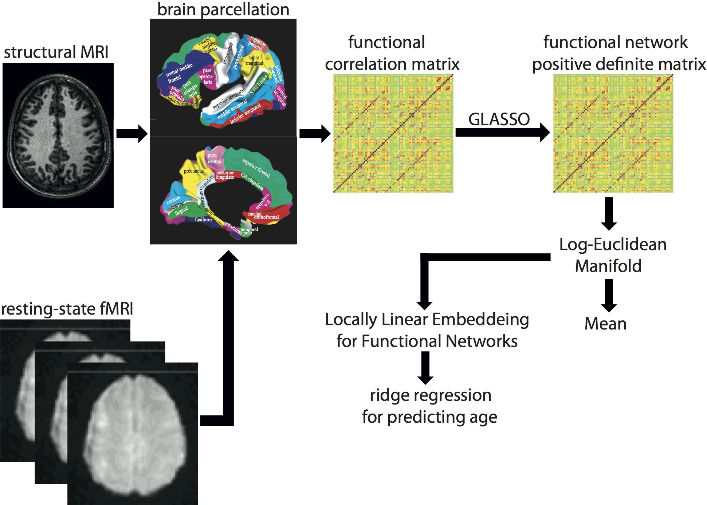
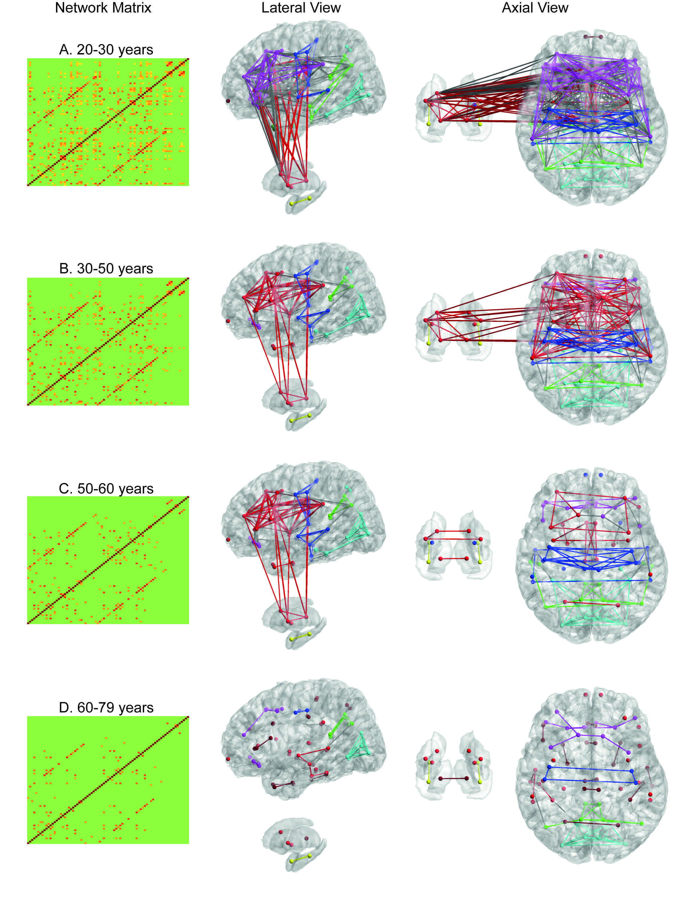

1. Manifold Learning on Brain Anatomical Shapes
|  |  |
Panel (a) of the above figure illustrates that the initial momentum vectors are the shape signatures of individual subjects relative to the atlas. Panel (b) of the above figure shows the hippocampi of 302 healthy subjects (age: 18 to 94 years) embedded in the 2-dimensional Euclidean space obtained using LLDME. This clearly illustrates that the hippocampi of young (blue circles) and old (red circles) subjects lie in two separate dimensions in this Euclidean space.
Volumetric and shape analyses have been widely used to access brain morphology in normal aging, neurodevelopment disorders, psychiatric and neurodegenerative diseases. Unlike brain volumetric measure, structural shape measure is able to characterize morphological variation from one subject to another with respect to anatomical spatial locations. Many studies have demonstrated that shape analysis is superior over volumetric analysis in terms of distinguishing patients from normal controls in a variety of psychiatric disorders and neurodegerative diseases such as schizophrenia and Alzheimer's disease. Thus, in recent years, there has been great emphasis on developing new approaches for shape analysis of anatomical models of brain structures based on landmarks, curves, surfaces, and images, their associated mapping approaches for encoding shape variations among individuals, as well as the statistical analysis for the detection of shape changes and classification. However, as structural shapes live in high dimension and the dimensionality of the shape information is much higher than the number of subjects available in neuroimaging studies, a major challenge in the shape analysis is to develop in a unified manner, a dimensionality reduction approach that is able to characterize efficiently anatomical variations in a low-dimensional space for facilitating the visualizationand classification of shapes, and to detect the association between shapes and clinical measures.
We recently developed a nonlinear embedding algorithm, Locally Linear Diffeomorphic Metric Embedding (LLDME), in the setting of large deformation diffeomorphic metric mapping (LDDMM) for surface-based anatomical shapes. LLDME approximates the infinite-dimensional diffeomorphic metric space representing the surface-based brain anatomy by a low dimensional manifold where the relationship of neighborhood brain anatomies in the diffeomorphic metric space can be preserved. Unlike (Gerber et al., 2010) where ISOMAP was used to preserve the global properties of the shape distribution in the diffeomorphic metric space, we adopted local linear embedding (LLE; Roweis and Saul, 2000) to preserve the local properties since brain anatomies may lie in a highly curved manifold. In the traditional LLE approach, the distance among neighbors in a high-dimensional manifold is approximated using the piecewise linear distances. It is a challenging task to generalize LLE to the infinite-dimensional and non-Euclidean shape space. We addressed fundamental questions such as how should a shape be approximated by a linear combination of its neighbors. In addition, it is computationally expensive to compute the diffeomorphic metric distance between any two shapes to determine the neighborhood relation. To resolve these issues, we derived the first order approximation of the large deformation diffeomorphic metric based on the conservation law of momentum. We illustrated that the initial momentum lies in a linear space and is the shape signature of individual subjects. Thanks to this, we were able to generalize LLE to the shape space as well as reduce the number of the surface-based LDDMM mappings from N(N-1) to N where N is the number of subjects in the large dataset. We derived a method for embedding a shape from its neighbors from the diffeomorphic metric space to a low-dimensional space based on the initial momentum. We also show how to efficiently find the low dimensional projection of a shape not used in the LLDME computation. Last but not least, we derived a simple procedure for reconstructing a surface of a shape given the low-dimensional embedding based on the linearity property of the initial momentum.
References:
- Xianfeng Yang, Alvina Goh, Anqi Qiu*, “Locally Linear Diffeomorphic Metric Embedding (LLDME) for Surface-Based Anatomical Shape Modeling”, NeuroImage, 56(1):149-161, 2011.
- Xianfeng Yang, Alvina Goh, Anqi Qiu*, “Approximations of the Diffeomorphic Metric and their Applications in Shape Learning”, IPMI, 2011.
- Xianfeng Yang, Alvina Goh, Shen-Hsing Annabel Chen, Anqi Qiu*, “Evolution of Hippocampal Shapes Across Lifespan”, Human Brain Mapping, accepted.
2. Manifold Learning on Brain Functional Networks
We propose a new analysis framework to utilize the full information of brain functional networks for computing the mean of a set of brain functional networks and embedding brain functional networks into a low-dimensional space in which traditional regression and classification analyses can be easily employed. For this, we first represent the brain functional network by a symmetric positive matrix computed using sparse inverse covariance estimation. We then impose a Log- Euclidean Riemannian manifold structure on brain functional networks whose norm gives a convenient and practical way to define a mean. Finally, based on the fact that the computation of linear operations can be done in the tangent space of this Riemannian manifold, we adopt locally linear embedding (LLE) to the Log-Euclidean Riemannian manifold space in order to embed the brain functional networks into a low-dimensional space. Figure 1 below shows the schematic framework for this method.
|
 |
Figure 1. Schematic for manifold learning on brain functional networks
We show that the integration of the Log-Euclidean manifold with LLE provides more efficient and succinct representation of the functional network and facilitates regression analysis, such as ridge regression, on the brain functional network to more accurately predict age when compared to that of the Euclidean space of functional networks with LLE. Using the Log-Euclidean analysis framework, we demonstrate the integration and segregation of cortical-subcortical networks as well as among the salience, executive, and emotional networks across lifespan (see Figure 2).
 Figure 2. Brain functional networks averaged in subjects at 20s (the first row), 30s and 40s (the second row), 50s (the third row), 60s and 70s years old (the fourth row). The first two columns show the average brain network in the matrix form without and with thresholding. The third and fourth columns show the average brain network in the graph mode. In the third column, the cortical surface is illustrated on the top panel and the subcortical surface is shown on the bottom panel. In the fourth column, the cortical surface is shown on the right panel and subcortical surface on the left panel.
|
References:
- Anqi Qiu*, Annie Lee, Mingzhen Tan, Moo K. Chung, “Manifold Learning on Brain Functional Networks in Aging ”,Medical Image Analysis, 20(1):52-60, 2015.